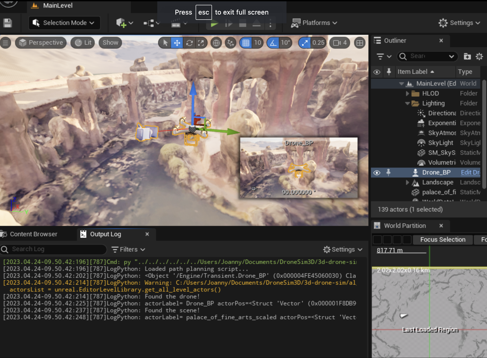

We are building a 3D drone flight simulator that incorporates open-source data from Google Earth to path plan in realistic world scenarios. The simulation demo is built in a free game engine Unreal Engine. For the purposes of this project, we are focusing on 1 scenario. The demo includes comparing different path-planning algorithms to select the best flight path. Next, we will add realism to the simulation such as constraints on where the drone can fly (for example, stay within the drone airspace and don’t fly too close to buildings). The output would be a video of the virtual camera following the drone path that shows a realistic simulated 3D world and paths planned around obstacles through certain points in space.
The idea is to make a 3D animated simulation of a drone flying in a realistic urban setting, such as a block in the city of San Francisco. The simulation loads a realistic 3D scene of an existing place available on Google Earth with obstacles such as buildings and trees. The challenge is to make the drone path realistic: i.e. follow certain rules and constraints in calculating the course while being fast (as it flies). The project explores different algorithms for path planning and compares the speed vs accuracy tradeoffs. The game engine automatically computes the flight path and displays it on the screen as the drone flies. The program outputs a video taken from the point of view of the drone to show a realistically rendered scene. We can tell the drone where to fly (which points of interest it should fly by) and record a video of the flight by following the drone. Additionally, we are implementing realistic animations such as the drone flying, rotors turning, etc..
Simulating realistic drone flight could be helpful for drone operators or those who are thinking about buying a drone. Existing drone simulators such as Microsoft AirSim don’t have scenes based on real-world locations. Our goal is to provide a realistic scenario of flying a drone either manually or autonomously through a 3D model of a real scene. The simulation is physically accurate with drone rotors approximating how real drones are made and the physics of their flight. Potentially, this tool could be used to plan a flight path of a real drone in any location, given available data, such as Google Earth satellite imagery.
Simulation Details
A 3D drone flight simulator incorporating open-source data from Google Earth to path plan in realistic world scenarios.
The simulation demo is built in a free game engine Unreal Engine 5.
We focus on 1 realistic scenario and use it to compare 4 path-planning algorithms to select the best flight path.
The simulation allows to compare several path-planning algorithms and choose the best path.
We plan to simulate failure modes such as drone crashing into obstacles.
To add realism to the simulation we will implement constraints on where the drone can fly and possibly, environmental forces such as wind.

Drone and scene in Unreal Engine
Realistic 3D environment: data collection & models
Modeling realistic world scenes for the simulation involved several steps:
Acquire Google Earth Studio data by recording a 360-degree video around a stationary point of any place on Earth.
Convert video data into a series of PNG frames (~100-150 images)
Convert a series of PNG frames into a dense 3D mesh and model in Meshroom photogrammetry open-source software.
Scale the scene 3D model in Blender to have realistic proportions.
Drone physics-based model & controls
We setup an animated drone model in UE5 that’s driven by physical thrusters with simulated propulsion, inertia, and torque, as opposed to a simple mesh controller.
Each of the drone’s rotors are realistically driven by their corresponding motor forces, currently configurable through an in-scene GUI.
Because of our implementation, currently the drone cannot move by itself, as movement actions (going forward, backward, strafe, etc.) requires different combination of thrusting powers of each motor, depending on the current speed of acceleration of the drone. One potential plan is to use reinforcement learning to integrate automatic drone navigation within a small distance.
Path Planning Algorithms
A*: In situations where obstacles are far and few in between and the drone needs to determine a pth rapidly, employing A* for path planning in Drone could be beneficial. These are situations in which of the drone needs to navigate.
D* Lite: It would be beneficial for Drone to use D* Lite for path planning in situations where the environment is continuously changing and the drone needs to swiftly adjust to new obstacles.
RRT*: In situations where the terrain is complicated and the drone needs to explore a broad region, employing RRT* for path planning in Drone could be beneficial. For the purpose of illustration, if Drone is going to be used for mapping or surveying in a highly populated urban setting, RRT* would be a good option for route planning.
RRT-Connect:
RRT-connect is a variant of the RRT* algorithm that is optimized for planning paths between two fixed points. It works well in scenarios where the drone needs to navigate through a complex environment to reach a specific destination.
Comparison
RRT-Connect is the most effective choice for path planning in a scenario where the drone needs to navigate through a complex environment to reach a specific destination
Or
Since the effectiveness of each algorithm will depend on the specific requirements of the scenario. A combination of different algorithms may also be used in different parts of the path planning process to optimize performance and effectiveness.
Challenges
Code integration into the same Unreal Engine project
Steep learning curve of Unreal Engine 5
Working across languages (Python and C++)
Getting high enough resolution on the scene images to construct a dense 3D mesh
Contributions
Irina: Gathered Google Earth data, created 3D scene model, and integrated the model into Unreal Engine. Started integration of Python scripts into Unreal Engine.
Tianyun: Integrated open-source drone model and texture into Unreal Engine. Animated drone rotors. Coded physical properties of drone.
Buyi: Integrating four path planning algorithms, set the map frame rules and producing the JSON file.
Xinyu: Integrating algorithm scripts into Unreal Engine, doing the comparisons for the four algorithms.
Next Steps
Irina: Add constraints and visual warnings if drone is close to an obstacle. Improve 3D scene mesh/model resolution.
Tianyun: Add a moving heuristic to the drone. Possibly use Reinforcement Learning to make a drone agent that navigates the drone around the scene.
Buyi: conduct python script with UE, output a JSON file for UE drone controller, and make the whole processing automatic. Accelerate the path planning (depends on the obstacles JSON file).
Xinyu: Visualize four path algorithms for comparison in Unreal Engine. More specifically obstacle detection. transform the 3D mesh input to obstacles JSON file for Python script.
Updated Schedule
4/6 - 4/12 Week 1
Setup Unreal Engine, gather Google Earth data, choose a complex scene to model. Find and integrate a realistic drone model into Unreal Engine. Research path planning algorithms.
4/13 - 4/19 Week 2
Develop basic path planning algorithms that avoid obstacles & passes through certain points given the 3D model of the scene. Create physics-based drone controls and GUI. Integrate scene model into the engine.
4/20 - 4/26 Week 3
Integrate the path-planning algorithms into Unreal Engine. Possibly add reinforcement learning to the drone path planning. Visualize the paths for comparison; find the best (“smoothest”) path.
4/27 - 5/3 Week 4
Add constraints and environmental effects; prepare final deliverables (paper, video, and presentation).
Resources and References
Open source software:
Blender v3.5
Google Earth Studio v1.7
Meshroom v2023.1.0
Unreal Engine v5.1.1 with UnrealImGui plugin v1.22 and Python API